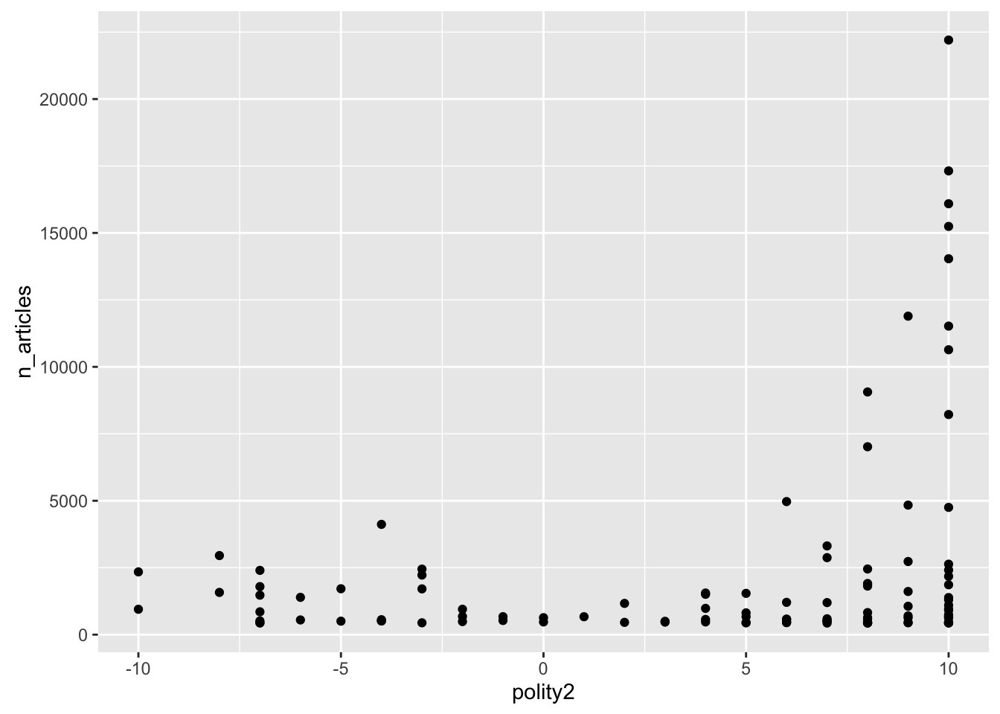
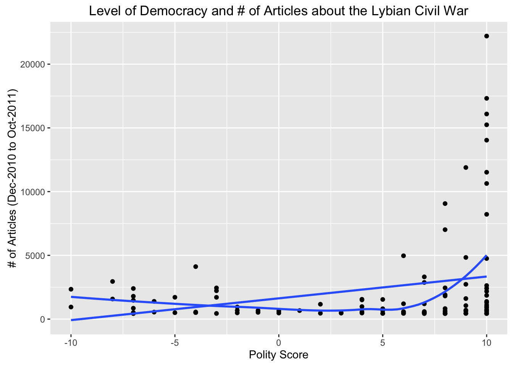
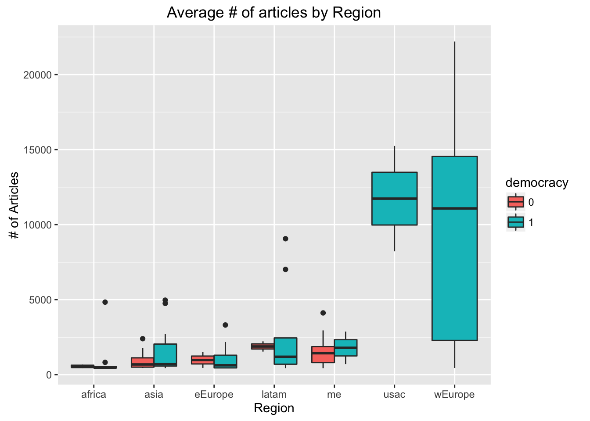

POL S/CS&SS 501, University of Washington, Winter 2016
$$ \DeclareMathOperator{\mean}{mean} \DeclareMathOperator{\var}{var} \DeclareMathOperator{\E}{E} \DeclareMathOperator{\argmin}{argmin} \DeclareMathOperator{\argmax}{argmax} $$| title: Plotting Data in R |
| date: January 15, 2016 |
| author: Andreu Casas |
Learning Objectives
- Plot data using `ggplot2
Initial Set up
- Create new R project for this lesson
- Create a data subdirectory
Today we will work with data from a recent article:
Baum, Matthew A. and Yuri M. Zhukov. (2015) “Filtering revolution: Reporting bias in international newspaper coverage of the Libyan civil war.” Journal of Peace Research, 52(3):384-400.
This article won the 2015 Best Visualization Award, given by the Journal of Peace Research to the article published in the journal that “not only impresses by its interesting analysis, but also by the large number of aesthetically pleasing and informative graphic.”
The replication data for the article is available in JPR’s website. However, since the replication material for this paper takes a while to download, and the four datasets they use are large and have numerous variables, for the purpose of this class we will use a version of one of their datasets that I put together.
Download the dataset in this link and store it in the data subdirectory
Plot data using ggplot2
Unlike many other graphics systems, functions in ggplot2 do not correspond to separate types of graphs. There are not scatterplot, histogram, or line chart functions per se. Instead plots are built up from component functions.
- Data
- Aesthetics: Maps variables in the data to visual properties: position, color, size, shape, line type …
- Geometric objects: The specific shapes that are drawn: points, lines,
- scales: How variables values map to “computer” values.
- stat: summarize or transform the data. e.g. bin data and count in histogram; run a regression to get a line.
- facet: create mini-plots of data subsets
Let’s start by plotting a scatterplot showing the relationship between level of democracy (variable polity2) in a country and the number of articles published by newspapers in that country related to the Lybian civil war (variable n_articles)
Load the ggplot2 package
library(ggplot2)
country <- read.csv("data/country.csv")Challenge
What is the code that produces this graph?
First we need to use the ggplot() function to assign the variables we want to plot
ggplot(country, aes(x = polity2, y = n_articles)) Assigning values to the ggplot() function is not enough and that is why we get either an error or an empty graph if we run the previous command. We also need to specify which type of graph (geometric object) we want to plot. In this case we want to use a scatterplot, so the full command would be:
ggplot(country, aes(x = polity2, y = n_articles)) +
geom_point()
When producing the plot, R is telling us that it“s not plotting two observations because they have missing values. For the purpose of this lab, and to avoid getting the same error repeatedly, let’s get rid of those observations using the na.omit() command
country <- na.omit(country)Good practice would be to store the ggplot() function into an object. This will make future code shorter and easier to read.
p <- ggplot(country, aes(x = polity2, y = n_articles))
p + geom_point()Also, let’s add a Title and more meaningful axes labels.
p <- ggplot(country, aes(x = polity2, y = n_articles))
p <- p + geom_point() +
labs(x = "Polity Score", y = "# of Articles (Dec-2010 to Oct-2011)") +
ggtitle("Level of Democracy and # of Articles about the Lybian Civil War")On the one hand, this scatterplot supports Baum and Zhukov’s (2015) argument: as the level of democracy of a country increases, the number of articles covering the Lybian civil war also increases. However, the data also shows a pattern that they ignore in the paper: in countries with very low levels of democracy (polity2 < -1) the coverage of the Lybian civil war was larger than in countries with medium level of democracy (-1 < polity2 < 6). Literature on regime types and transition theorize similar U-shaped relationships: e.g. Acemoglu and Robinson (2006) when discussing the relationship between Inequality and Democratization.
Challenge
- How can we fit a line describing a linear relationship and a line describing a more U-shaped relationship between these two variables?
p + geom_smooth(se = FALSE) +
geom_smooth(method = 'lm', se = FALSE)
Since the colors of the two lines are the same, the graph is a little bit confusing. Let’s change their color.
p + geom_point() + geom_smooth(se = FALSE, col = "red") +
geom_smooth(method ="lm", se = FALSE, col = "blue")In their study, instead of using a discrete representation of a country’s level of democracy (polity2), they use a dichotomous expression: whether the country is democratic or not (democracy)
Let’s try to produce a barplot similar to the one they have in page 390, where they show the number of articles related to the Lybian civil crisis by regime type (democracy/non-democracy) and region (East Europe, Western Europe, Latin America, Africa, Asia, Middle East, and United States and Canada)
country$democracy <- as.factor(country$democracy)
p2 <- ggplot(country, aes(x = region, y = n_articles, fill = democracy))
p2 + geom_bar(stat = "summary", position = "dodge", fun.y="mean") +
labs(x = "Region", y = "# of Articles") +
ggtitle("Average # of articles by Region") +
coord_flip() +
scale_x_discrete(labels = c("Africa", "Asia", "E. Europe", "L. America",
"Mediterranean", "N. America", "W. Europe"))Challenge
- How does our barplot differ from Baum and Zhukov’s (2015:390)?
- Which barplot do you think summarizes the data better?
Now showing the same information using boxplots
p2 + geom_boxplot() +
labs(x = "Region", y = "# of Articles") +
ggtitle("Average # of articles by Region")
Another boxplot excluding the regions North America (usac) and Western Europe (wEurope)
country2 <- country[!(country$region %in% c("usac", "wEurope")), ]
p3 <- ggplot(country2, aes(x = region, y = n_articles, fill = democracy))
p3 + geom_boxplot() +
labs(x = "Region", y = "# of Articles") +
ggtitle("Average # of articles by Region")
This work is licensed under a Creative Commons Attribution-NonCommercial-ShareAlike 4.0 International License. R code is licensed under a BSD 2-clause license.